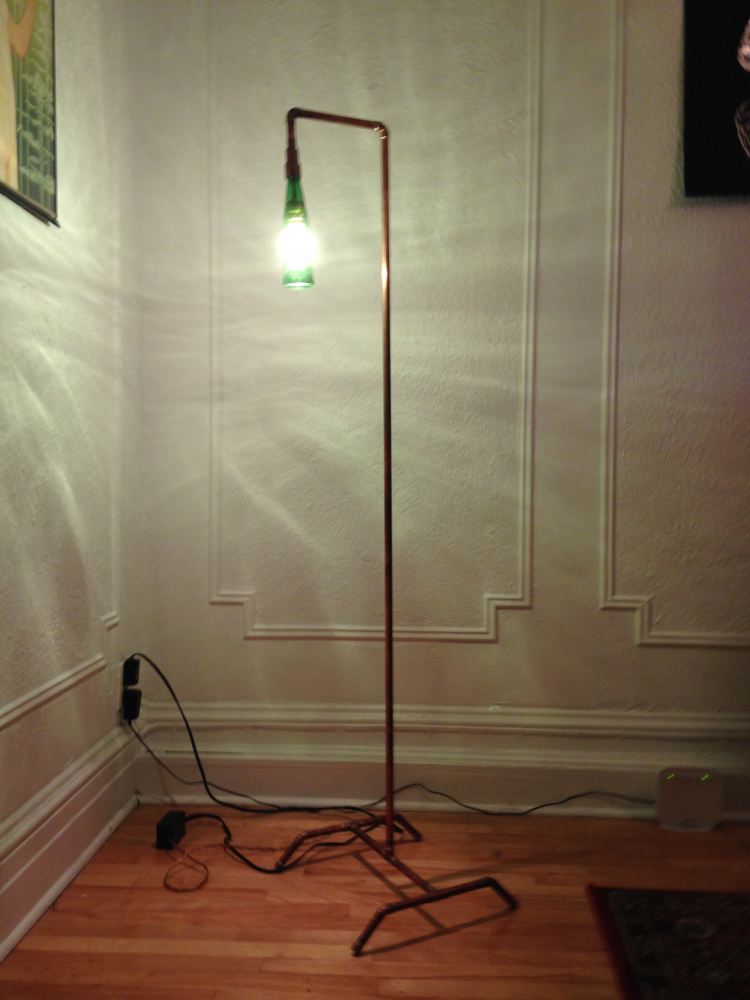
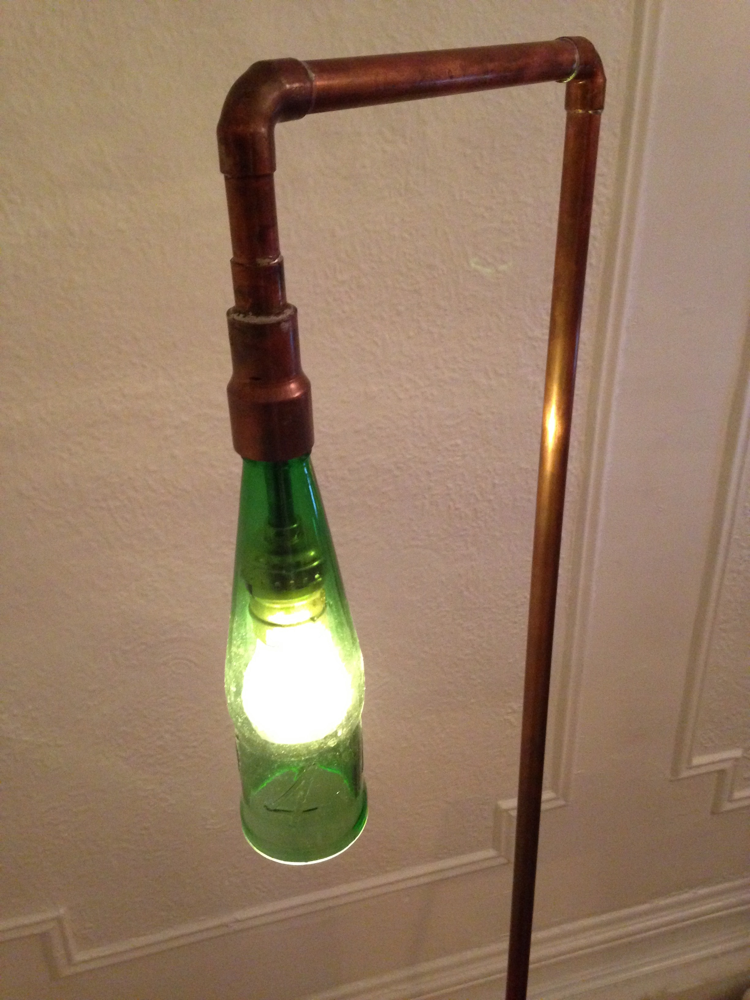

This summer I tried to do projects related to the apartment I would be moving into for the next year. While visiting my brother in Seattle we ate at a restaurant with beer bottle lamps on the ceiling, and I decided to do a similar project.
Here's the lamp in its new home. It's a reading lamp made of copper pipe that stands about 5 feet tall. The shade is a beer bottle that I cut bottom off. The lamp has three settings, and is operated by touching any part of the metal.
I'm always happy to be able to make things that I can use. The lamp is complete and looks great. People always get a kick out of touching it to turn it on.
Here's a close-up of the lamp shade. It's a 1664 bottle which gives off cool greenish light, and when I bought it I found a bunch of tasty beer inside. This is actually the third bottle that's been on the lamp. Cutting bottles is a tricky process. The first one I cut is an interesting story. I had finished the rest of the lamp, and only needed to cut the bottle. After I cut it, the bottom was sharp and a little jagged so I sanded it smooth for about an hour. Because I was so excited to finish the project, I cut a corner at the end and didn't sand the bottom completely flat. There was one tiny nick in the edge that I assumed nobody would see anyway, so I put the whole lamp together and enjoyed my post-project euphoria. That night, around 2 AM, I woke up to a loud pop. I sat up in bed, and after a few seconds of silence, I heard an even louder crack and the sound of glass hitting the floor, the bottle had exploded. I think what happened was that the small crack in the bottom was very slowly propagating through the glass and 6 hours later, the fracture grew and shattered the entire bottle. After this I was cursed. The next 20 bottles I cut all ended up breaking. Finally I put a Bass bottle on, but it didn't fit right and I didn't like the look of it or the light it made. It wasn't until three months later that I found a good looking bottle that cut nicely.
I cut the bottle using a home-made jig involving a glass scorer. There are plenty of guides online for different types of jigs. They're all pretty simple to make and you can have a fun time cutting decorative bottles into drinking glasses. I have tried the burning string method before and it works, but using a glass cutter is much more likely to produce a clean cut.
Wiring this lamp up was actually pretty tricky. The wire starts at one of the legs and travels inside the pipe all the way up to the socket. It follows a pretty complicated path through all of the piping so I wouldn't be able to just feed the wire through after soldering everything together. I had to solder the pipe together piece- by piece while feeding the wire through. This caused another problem, because the heat from the torch while soldering the pipe together would wreck the wire inside. I ended up splicing the lamp wire with a sacrificial wire that would be inside the pipe while it was being soldered. After I finished putting the lamp together I said a short prayer while tugging on the sacrificial wire. Thankfully, I was able to feed the entire lamp wire through without wrecking or losing it. After that, the wiring was pretty straightforward. I attached the lamp wire to the touch-switch circuit and connected everything to a power cord from a dead hair dryer. There is an uninsulated copper wire coming out of the electrical box that connects to a screw on the leg of the lamp. This connects the sensor of the touch circuit to the copper pipe of the lamp.
Pulling the wire through
Safety third.
Soldering together the body was a pretty fun process that surprisingly went over pretty easily. Learning to solder pipe was a little tricky at first, but it's a useful skill. The entire lamp is made from a 10 foot length of pipe.
Planning everything out with my trusty Valium ruler.
The Anxiolytic by which all others are measured.
All of the parts and fittings except for the tall body of the lamp.